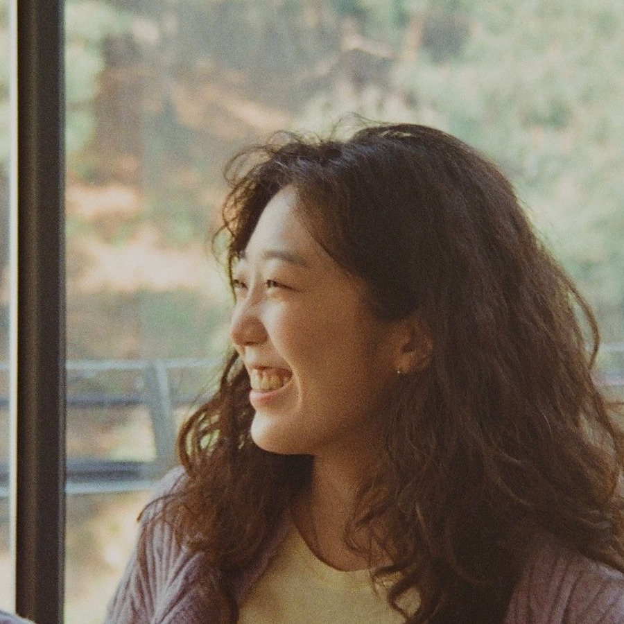

I create paintings about the body, the mind, and the soul.
The flowerpots that appear throughout my work are metaphors for people. They represent the invisible boundaries we live within—our fears, expectations, environments, and identities that continue to shape us.
Each series explores a different part of what it means to be human. The Body Flowerpot reflects the physical self that experiences the world. The Mind Flowerpot questions the invisible limits that keep our thoughts rooted in place. The Soul Flowerpot imagines the possibility of finally becoming free.
Alongside these works, my Dart Human series views life as a journey of throwing darts toward an unseen target. Every choice, failure, hope, and dream becomes another throw. Missing is inevitable, but growth comes from continuing to aim.
Although my paintings use playful characters, bold colors, and graphic forms, they are rooted in questions about identity, independence, and the quiet hope of becoming who we truly are.
Rather than offering answers, I hope each painting leaves space for viewers to discover their own.